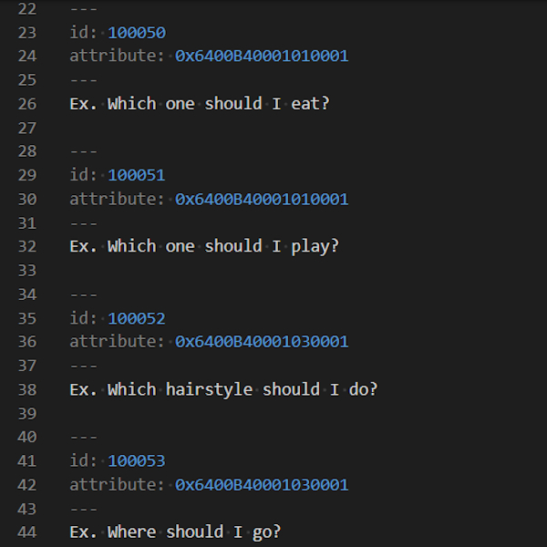
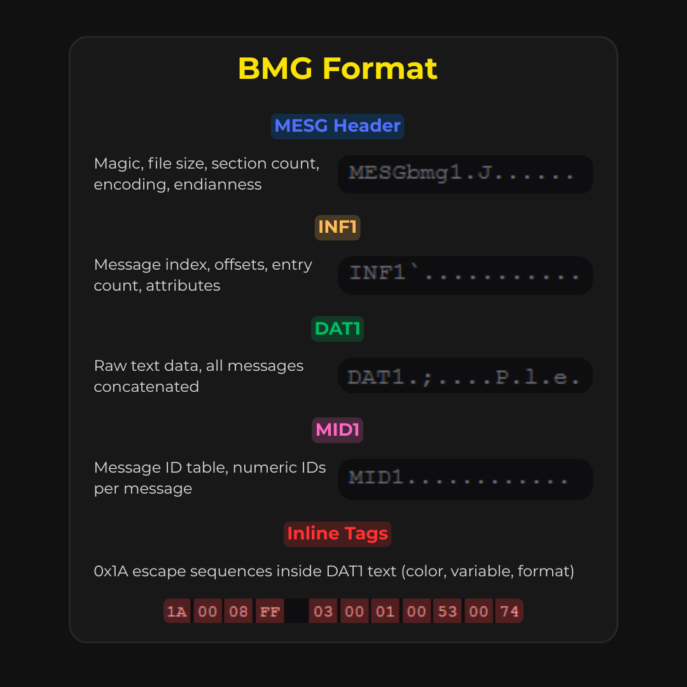
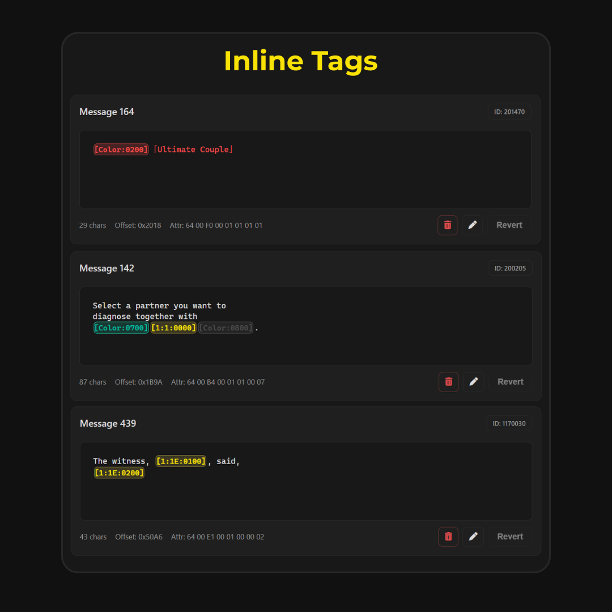
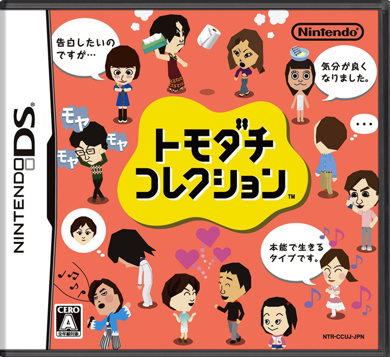

In 2024, I started a French translation mod for Tomodachi Collection, a Nintendo DS life simulation
game that was never officially released outside Japan. The game stores all its text in BMG files: a proprietary
Nintendo binary format with no official documentation. Existing editors were either too sketchy to trust or
would silently corrupt the file on save, making them unusable for a real translation workflow.
So I
built my own: a browser-based BMG editor capable of opening, editing, and re-exporting any BMG file while
preserving every byte of the original structure it didn’t need to touch.
No documentation. No existing editor. Just the binary and enough curiosity to reverse-engineer it.
BMG (Binary Message Group) is a Nintendo format used across NDS and Wii titles to store all in-game
dialogue and UI strings. It has no official spec. Some community editors existed, but they were
unreliable: either abandoned projects of uncertain origin, or tools that would produce files the game
engine rejected outright because they mishandled section sizes, offset tables, or the padding rules
between chunks.
Tomodachi Collection added its own layer of complexity: text strings can embed
inline control tags, sequences of raw bytes starting with 0x1A that the game engine
interprets at render time as color changes, variable insertions, and formatting commands. Editors that
didn’t understand this structure would strip or mangle those bytes on save, producing text that
displayed wrong or crashed the game.

I opened raw BMG files in a hex editor and mapped the structure manually. A BMG file starts with an
8-byte magic string (MESGbmg1 for little-endian, GSEM1gmb for big-endian),
followed by file size, section count, and encoding type. Then come the sections, each identified by a
4-byte ASCII tag:
INF1 holds the message index: how many messages, how large
each entry is, and the byte offset pointing to where each message lives in DAT1.
DAT1 is the raw text block: all messages concatenated, each null-terminated, with
inline tag bytes embedded mid-string.
MID1 stores a numeric ID for each message,
used by the game engine to look up specific strings by code.
STR1 optionally holds
ASCII label names for messages, used in some games for developer reference.

The trickiest part was the inline control tags embedded in message text. A tag sequence starts with
byte 0x1A, followed by the total tag length, a group ID, a type ID (2 bytes), and
optional argument bytes. These tags encode things like color changes, in-game variable insertions
(like a Mii’s name), or special formatting.
In the editor, these are surfaced as
human-readable tokens: [Color:0200] for a specific color, [FF:0:0800]
for another. When the user edits a message and saves, the parser re-encodes the tokens back to their
exact original byte sequences. If the tag was already in the file, its original bytes are reused
byte-for-byte. Only new tags typed by the user get freshly encoded, minimizing the risk of
introducing any unintended differences.

The export logic (buildBmg) was designed around a core constraint: only touch what changed. For each
message, the editor tracks whether the text is dirty (edited) or clean (untouched). Clean messages
keep their original byte chunk from DAT1 exactly as it was. Dirty messages get re-encoded, padded
to 4-byte alignment, and written fresh. The INF1 index is then rebuilt with updated offsets pointing
to the correct positions in the new DAT1.
The rest of the file, including sections like FLW1
or FLI1 that the editor doesn’t touch, is preserved verbatim from the original binary. The
result is a file that is structurally identical to the original everywhere it wasn’t edited,
which is the only way to guarantee the game engine won’t reject it.
Different games use BMG differently. Tomodachi Collection has its own color token set and visual rendering behavior. New Super Mario Bros uses a different tag vocabulary. Rather than hardcoding one game’s rules, I built a plugin system: each game gets its own JS module that declares its special token definitions and a CSS file for how those tokens should look in the editor. Switching games from the dropdown reloads the token set and the visual theme, so the editor stays accurate for whatever file you’re working on.

The editor doesn’t know what a Mii is. It just knows exactly which bytes to leave alone.
A browser-based binary editor for a proprietary Nintendo format, built entirely from reverse-engineering:
no SDK, no documentation, no prior tooling for this specific game. It parses, edits, and re-exports BMG
files with full inline tag support, multi-section preservation, and a game-specific profile system that
makes it extensible to other NDS and Wii titles.
What it proved: understanding a closed binary
format deeply enough to write a non-destructive editor for it is a different kind of technical work.
It’s not about libraries or frameworks. It’s about reading raw bytes until the structure
reveals itself.